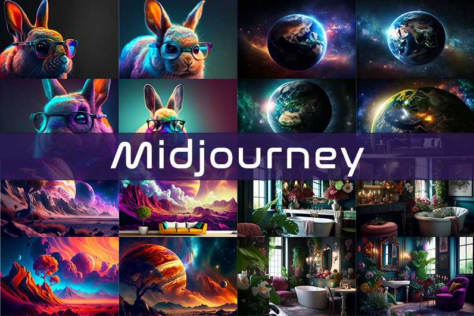
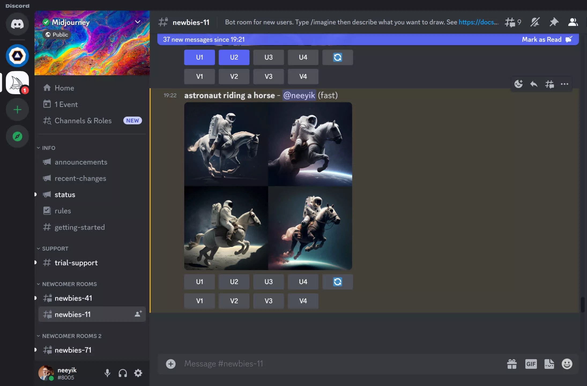

Midjourney

Midjourney is an independent research lab exploring new mediums of thought and expanding the imaginative powers of the human species.
There is a small self-funded team focused on design, human infrastructure, and AI behind Midjourney, which have 11 full-time staff and an incredible set of advisors.

Image generating AI refers to artificial intelligence systems or models that have been specifically trained to generate or create images. These AI models leverage deep learning techniques, such as generative adversarial networks (GANs) or variational autoencoders (VAEs), to generate new images based on patterns and data they have learned from a training dataset.
Image generating AI can produce images that range from realistic to abstract, depending on the training data and the specific architecture of the model. These AI systems often learn to capture and mimic various visual elements such as colors, textures, shapes, and even higher-level concepts like objects or scenes.
The training process involves exposing the AI model to a large dataset of existing images, allowing it to learn and extract the underlying patterns and features. Once trained, the AI model can generate entirely new images that resemble the patterns and style of the training data.
Image generating AI has applications in various domains, including art, design, entertainment, and computer graphics. It can be used for tasks such as creating artwork, generating realistic synthetic images, enhancing or manipulating images, and even assisting in the creative process by providing inspiration or generating novel visual concepts.
However, it's important to note that image generating AI may have limitations and can sometimes produce images that are unrealistic, distorted, or biased if not properly trained or validated. Ethical considerations, data quality, and responsible use of AI technology are crucial in ensuring the reliability and fairness of the generated images.